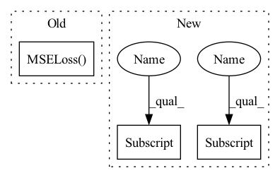

Pattern ID :1166

Before Change
self.binarization_loss_warmup_steps = train_config["duration"]["binarization_loss_warmup_steps"]
self.sum_loss = ForwardSumLoss()
self.bin_loss = BinLoss()
self.mse_loss = nn.MSELoss()
self.mae_loss = nn.L1Loss()
def forward(self, inputs, predictions, step):
After Change
self.loss_config = train_config["loss"]
self.pitch_config = preprocess_config["preprocessing"]["pitch"]
self.pitch_type = self.pitch_config["pitch_type"]
self.use_pitch_embed = model_config["variance_embedding"]["use_pitch_embed"]
self.use_energy_embed = model_config["variance_embedding"]["use_energy_embed"]
self.model_type = model_config["prosody_modeling"]["model_type"]
self.learn_alignment = model_config["duration_modeling"]["learn_alignment"]
self.binarization_loss_enable_steps = train_config["duration"]["binarization_loss_enable_steps"]
In pattern: SUPERPATTERN
Frequency: 3
Non-data size: 3
Instances
Fragment ID: 3449148
Project Name: keonlee9420/comprehensive-transformer-tts
Commit Name: f52c66daad0253505e34ec0e2e0884f6ad9d3659
Time: 2022-02-18
Author: keonlee9420@gmail.com
File Name: model/loss.py
M Class Name: CompTransTTSLoss
N Class Name: CompTransTTSLoss
M Method Name: __init__(4)
N Method Name: __init__(4)
M Parent Class: nn.Module
N Parent Class: nn.Module
M File Name: model/loss.py
N File Name: model/loss.py
M Start Line: 11
M End Line: 23
N Start Line: 15
N End Line: 31
Fragment ID: 3449188
Project Name: plemeri/inspyrenet
Commit Name: d5fb53c878278ee8e8348479ed7a946ac4b0b4eb
Time: 2021-12-21
Author: taehoon1018@postech.ac.kr
File Name: lib/InSPyReRocket.py
M Class Name: InSPyReRocket
N Class Name: InSPyReRocket
M Method Name: __init__(4)
N Method Name: __init__(4)
M Parent Class: nn.Module
N Parent Class: nn.Module
M File Name: lib/InSPyReRocket.py
N File Name: lib/InSPyReRocket.py
M Start Line: 114
M End Line: 128
N Start Line: 19
N End Line: 38
Fragment ID: 3449184
Project Name: plemeri/inspyrenet
Commit Name: d48c785645cae0a11451dc799be943ebd30cca7b
Time: 2021-12-09
Author: taehoon1018@postech.ac.kr
File Name: lib/InSPyReNetV4.py
M Class Name: InSPyReNetV4
N Class Name: InSPyReNetV4
M Method Name: __init__(4)
N Method Name: __init__(4)
M Parent Class: nn.Module
N Parent Class: nn.Module
M File Name: lib/InSPyReNetV4.py
N File Name: lib/InSPyReNetV4.py
M Start Line: 112
M End Line: 130
N Start Line: 19
N End Line: 37
Fragment ID: 3449149
Project Name: keonlee9420/comprehensive-transformer-tts
Commit Name: f52c66daad0253505e34ec0e2e0884f6ad9d3659
Time: 2022-02-18
Author: keonlee9420@gmail.com
File Name: model/loss.py
M Class Name: CompTransTTSLoss
N Class Name: CompTransTTSLoss
M Method Name: __init__(4)
N Method Name: __init__(4)
M Parent Class: nn.Module
N Parent Class: nn.Module
M File Name: model/loss.py
N File Name: model/loss.py
M Start Line: 11
M End Line: 23
N Start Line: 15
N End Line: 31